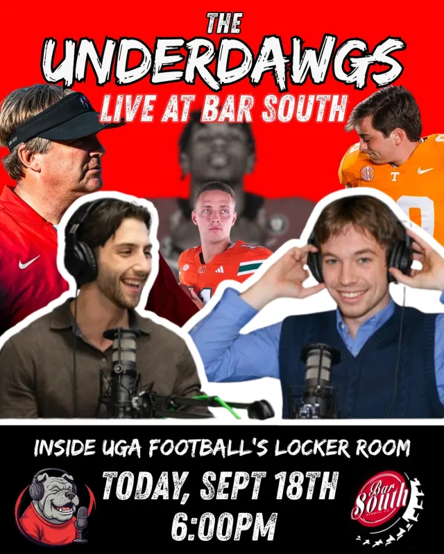
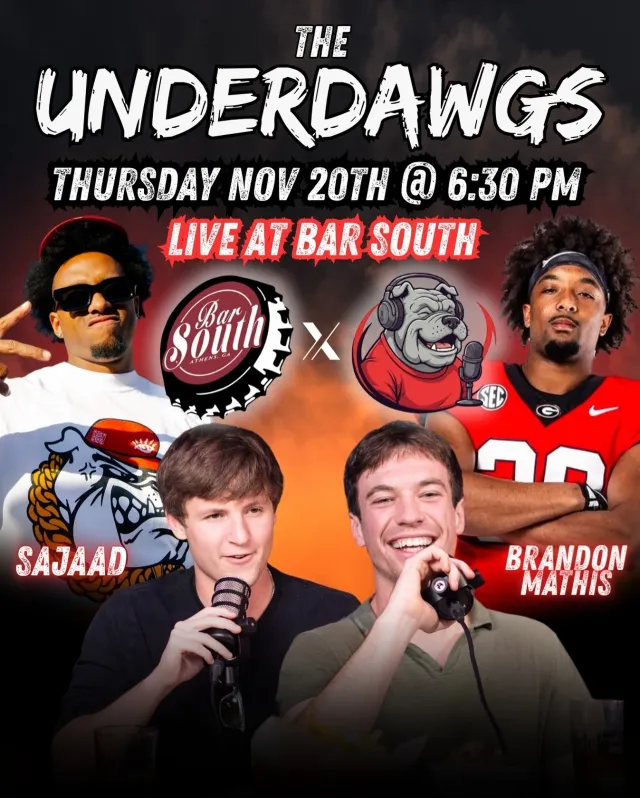
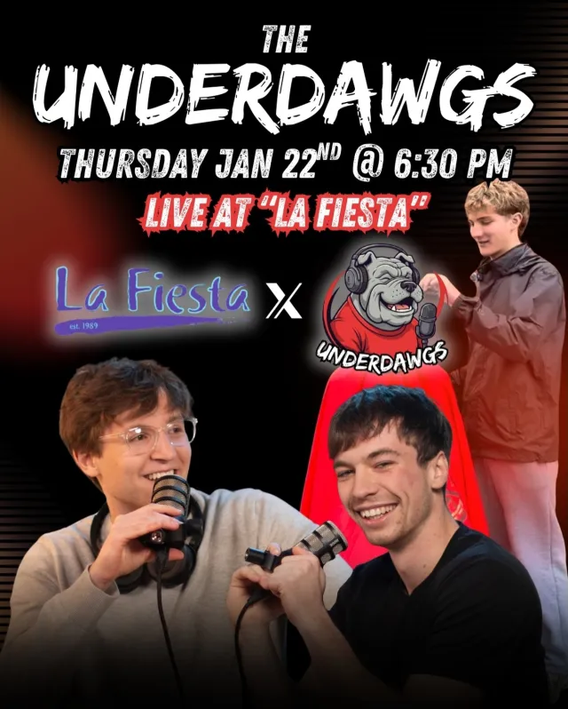

How the show started
The show was co-founded by two University of Georgia students, Massimo Bellew and Oliver Carrigan. The idea was to give space to UGA athletes who get less attention than the football team, and to get to know them as people. The first guest, in October 2024, was Elena Kulichenko, a UGA track athlete who had competed at the Paris Olympics a few months earlier.
When The Red & Black, the student newspaper, wrote about the show in early 2025, it described a team of 13 people releasing one or two episodes a month, each about 40 minutes long.
Read the article in The Red & Black
From cameras to content
I first helped set up the cameras and lighting for each episode, so the recordings looked professional. Later I also assisted with the audio during recording sessions. As the show grew, I started editing short clips for Instagram and TikTok to increase audience engagement.
Owning the look
Eventually I took responsibility for the graphics: Instagram Reel covers, YouTube thumbnails and promotional posters for our live shows at bars in downtown Athens. In total I made more than 200 graphics for the show and edited more than 20 clips. The show's Instagram credits thirteen of its posts to me by name, most of them posters for live recordings.

Sept 18, 2025 · Bar South Oct 16, 2025 · Dos Palmas
Oct 16, 2025 · Dos Palmas
Nov 20, 2025 · Bar South
Jan 22, 2026 · La Fiesta
Four of the posters. Each one opens the original post on the show's Instagram.
A clip that was my idea, May 2025
I kept the same structure on every poster, so people could recognize the show at a glance: the name at the top, the date and time, the venue, and the guest between the two hosts.
Going live
In September 2025 the show left the studio and went live for the first time, in front of an audience at Bar South in downtown Athens. From then until November there was a live recording on seven Thursdays, at Bar South and Dos Palmas, with guests who went from UGA football players to a comedian and a rapper. Every show needed a poster, and each of those posters was mine. We printed them to hang in the bars, then used the same artwork for the Instagram post announcing each night.
What changed
With better content and stronger social media, the podcast evolved into much more than a class project. We began interviewing University of Georgia athletes and influential people in the Athens community.
- 344posts on the show's Instagram
- 1,938followers on Instagram
- 253videos on YouTube
The show today, from its public pages in November 2026.
What I took from it
This experience showed me how important content, branding, communication and social media are when you are trying to build an audience. I helped improve our content, strengthen our brand and expand our audience by contributing my ideas and skills behind the scenes.
Creative content and social media can build an engaged community.
What I still want to learn
My experience so far is mostly social media and content creation. I don't have much direct experience with influencer marketing yet, which is one of the reasons I wanted to study it at Miami. I want to understand how brands work with influencers and how those campaigns help reach and engage consumers.